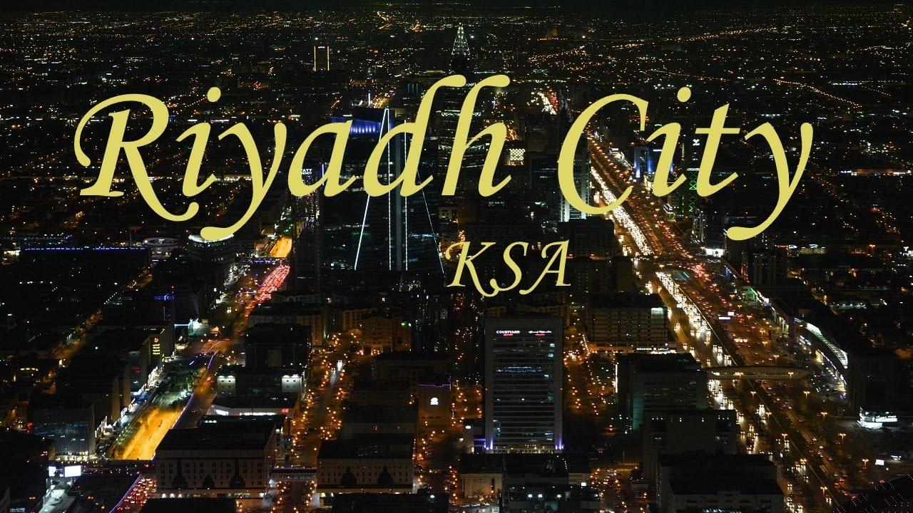

he city is divided into 15 municipal districts, managed by Riyadh Municipality headed by the mayor of Riyadh, and the Riyadh Development Authority, chaired by the governor of Riyadh Province, Faisal bin Bandar Al Saud.
From the 1940s, Riyadh "mushroomed" from a relatively narrow, spatially isolated town into a spacious metropolis. When King Saud came to power, he made it his objective to modernize Riyadh, and began developing Annasriyyah, the royal residential district in 1950. Following the example of American cities, new settlements and entire neighborhoods were created in grid-like squares of a chess board created and connected by high-performance main roads to the inner areas. The grid pattern in the city was introduced in 1953. The population growth of the town from 1974–1992 averaged 8.2 percent per year. Riyadh is divided into fifteen branch municipalities in addition to the Diplomatic Quarter. Each branch municipality in turn contains several districts, amounting to over 130 in total, though some districts are divided between more than one branch municipality. The branch municipalities are Al-Shemaysi, Irqah, Al-Ma'athar, Al-Olayya, Al-Aziziyya, Al-Malaz, Al-Selayy, Nemar, Al-Neseem, Al-Shifa, Al-'Urayja, Al-Bat'ha, Al-Ha'ir, Al-Rawdha, and Al-Shimal ("the North"). Olaya District is the commercial heart of the city, with accommodation, entertainment, dining and shopping options. The Kingdom Center, Al Faisalyah and Al-Tahlya Street are the area's most prominent landmarks. The centre of the city, Al-Bathaa and Al-Dirah, is also its oldest part.